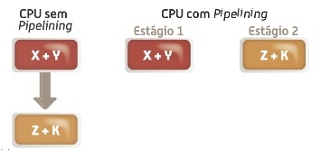
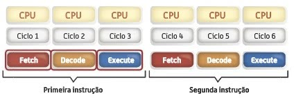
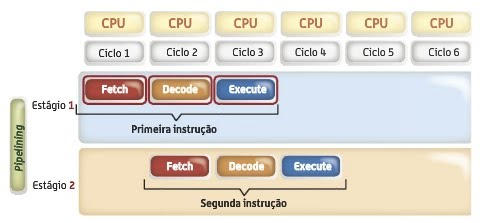
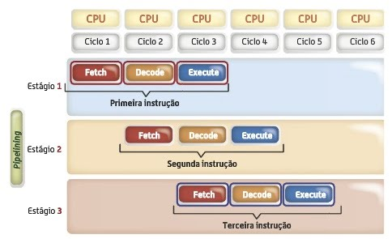
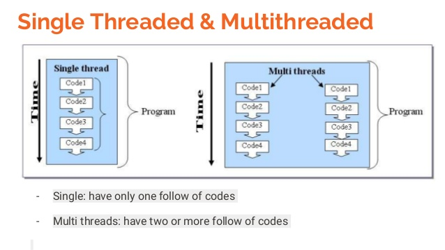

Técnicas de processamento paralelo
Como podemos ver na Secção Memória, um processador executa cada programa de forma sequencial, isto é, passo a passo. Na presença de duas instruções sequenciais, mas sem dependencias entre elas, seria vantajoso que ambas fossem realizadas em smultaneo. Representa o metodo que permite ao processador não necessitar de esperar o término de uma operação para processar uma nova.
Por exemplo, duas instruções sequencias X + Y e Z + K em nada dependem uma da outra. Antes da introdução da gama de processadores X86 os processadores começavam por somar X + Y e terminada esta instrução prosseguiam a soma de z + K.
Com a aplicação da tecnologia de pipelining, dependendo do número de estágios envolvidos foi possivel atender a mais do que uma instrução em simultãneo. Vejamos as diferenças de um CPU com e sem pipeling na execução das duas somas anteriores

Em de termos do ciclo "fetch-decode-execute" é que residem as grandes diferenças entre um CPU com e sem pipelining.
Vejamos como são atendidas duas instruções po um processador sem pipelining

Como se pode verificar a segunda instrução apenas é atendida quando a primeira termina de ser executada.
As mesmas instruções poderiam ser atendidas por um pocessador com pipelining da seguinte forma:

Na figura anterior, verifica-se que a s mesmas instruções foram executadas em menos ciclos que a abordagem anterior, devido ao paralelismo de atendimento das instruções
Se houvesse uma terceira instrução e um terceiro estágio de pipelining ela começaria a ser processada no terceiro ciclo juntamente com a fase de execução (primeira situação) e descodificação (segunda instrução).
A partir dessa altura, seria possível realizar uma tarefa por cada ciclo aumentando a "velocidade de processamento"

Quanto mais estágios de pipeline mais instruções podiam ser atendidas em simultâneo desque estas também fossem partidas no mesmo número de estágios, ou seja, em vez da instrução ser partida em 3 partes(fetch-decode-execute) seria dividida em mais partes, passando naturalmente menos tempo de relógio em cada parte da instrução.
Também é possivel utilizar outra técnica denomidada de Hyper-Threading, que consiste em dividiar um processador fisico em dois processadores lógicos. Assim o mesmo programa pode ser dividido em threads que são tratados em simultâneo pelos núcleos virtuais, permitindo o melhor aproveitamento do CPU. Porém para isto acontecer o programador deve criar o programa de forma com que ele possa ser repartido e processado em modo dividido.
